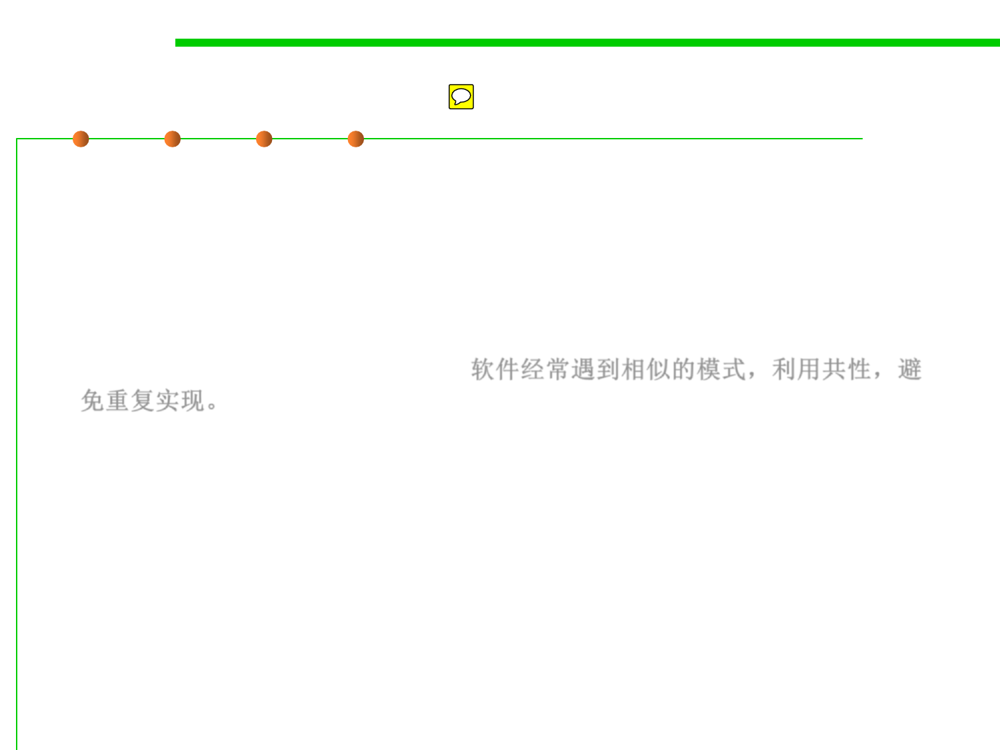

External 4: Reusability
1.2 Quality Objectives of Software Construction
▪ Reusability is the ability of software elements to serve for the
construction of many different applications.
▪ The need for reusability comes from the observation that software
systems often follow similar patterns; it should be possible to exploit
this commonality and avoid reinventing solutions to problems that
have been encountered before. 软件经常遇到相似的模式，利用共性，避
免重复实现。
– By capturing such a pattern, a reusable software element will be
applicable to many different developments.
Chapter 5 (Design for/with reuse)